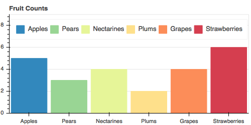
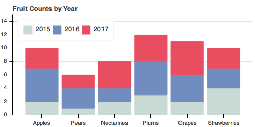
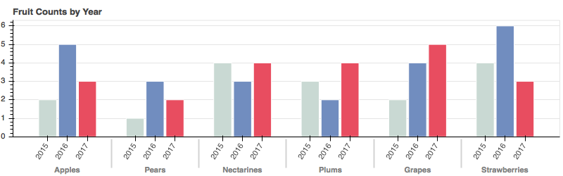
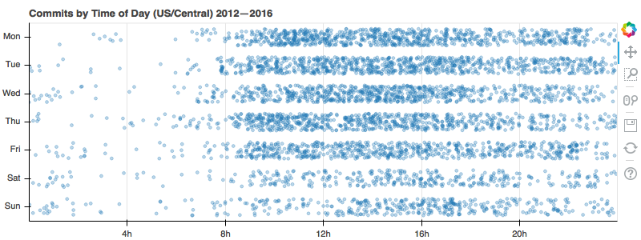

We are pleased to announce the release of Bokeh 0.12.7!
This update includes the following highlights:
- Support for graph/tree/network plots.
- Filterable and groupable
ColumnDataSourceviews. - Explicit control over plot aspect ratios.
- New
Expressionmodels for client-side computations, e.g.Stack. - New
bokeh.transformhelpers for simplifyingDataSpectransforms. - Improvements for using Bokeh with Categorical data, including hierarchical axes.
- Added
hbar_stackandvbar_stackfor easy stacked bar charts.
Additionally, this release contains many bugfixes and docs additions, including three new chapters in the User's Guide. For full details, see the CHANGELOG and Release Notes.
As a reminder, we now package and upload examples for each Bokeh release to our CDN. Click here to download.
This release can most easily be installed from the Bokeh channel on
Anaconda.org by executing the
command conda install -c bokeh bokeh if you are using
Anaconda, otherwise use pip install bokeh.
Before we get to the fun new features and fixes in this release, a few odds and ends:
- In order to make some dramatic improvements for the long term, a few small, immediate breaking changes were unavoidable. It is not expected they will affect many users, but please consult the Release Notes carefully.
- Removal of
bokeh.mplandbokeh.chartsis accelerated. With almost no comments about their deprecation, they will be removed after this release. Doing so will help lighten the burden on the core team during the busy lead-up to 1.0. - GitHub user p-himik has been added to
@bokeh/devafter successfully finishing PRs#6685,#6734,#6735,#6737, and#6738. We would love to add you too! Come by the Dev Chat Channel to ask about how to get started contributing to Bokeh. - All example and tutorial notebooks in
bokeh/bokeh-notebookshave been cleaned and brought up to date with current features. You can clone the repository to run the notebooks locally, or see statically rendered versions on nbviewer.org.
Now, on to what's new!
Network/Graph Visualizations
One of the oldest issues in tracker was #187 — Support graphs/trees/networks from way back in 2013. I am happy to report that all the necessary pieces finally became available, and core dev canavandl put them together to add this long-awaited feature to Bokeh! This includes flexible and extensible policies for highlighting and selection, as seen in the examples below (hover over the graphs to see different interactions):
Check out the new User's Guide section Visualizing Network Graphs for docs and examples. Note that Bokeh itself is suitable for small to mid-sized graphs, but if you have very large graphs, help is on the way from Datashader. Ongoing work will make the two projects work together seamlessly for interactive exploration of large graphs across different scales.
Aspect Ratio Control
Another very old feature request was #474 — Easily control aspect ratio . The lack of this feature spawned bug reports such as #517, #6603, and many others over the years. I am happy to say that this issue has been closed by brand new contributor DuCorey. Now, if you'd like to have auto-ranged data bounds match the pixel aspect ratio of the axes, it's as simple as:
p = figure(match_aspect=True)
The Pull Request to add this feature came out of the blue, and I was so pleasantly surprised I had to leave a comment expressing my gratitude right there:
...this is the power of OSS. One reason that this issue has lingered for so long is that I had framed the problem in entirely different terms... But you've come at it from the opposite direction, which never occurred to me at all... I think your approach is actually much simpler as well as more promising!
The core team works tirelessly to improve Bokeh. But we don't have a monopoly on good ideas, and we don't have 100 hours in a day. No matter how hard we might work, Bokeh will always be better with your contributions. Come by the Dev Chat Channel and we will be pleased to help you get started.
Improved Categoricals
Another area where Bokeh has needed improvement for a long time is in its handling of Categorical data. There was basic support, but it did not cover common cases like nested categories or hierarchical axes. There was also a clumsy and problematic system for fine-tuning visual appearance and location of categorical quantities. For this release, Bokeh's handling of categorical data has been rebuilt from the ground up. All the plots below, which would have been difficult or impossible before, are now easy to create:
 |
|
|  | |
|  | |
|  | |
 |
 |
|  | |
(Note: all the images were made with the export_png function added last release!)
Some of the improvements are foundational enhancements, such as the ability to
specify (and display axes for) hierarchical categories. Others come in
the form of new convenience API, such as the jitter, dodge and factor_cmap functions,
or the hbar_stack and vbar_stack glyph methods that make stacking bars trivial:
fruits = ['Apples', 'Pears', 'Nectarines', 'Plums', 'Grapes', 'Strawberries']
years = ["2015", "2016", "2017"]
colors = ["#c9d9d3", "#718dbf", "#e84d60"]
data = {'fruits' : fruits,
'2015' : [2, 1, 4, 3, 2, 4],
'2016' : [5, 3, 4, 2, 4, 6],
'2017' : [3, 2, 4, 4, 5, 3]}
source = ColumnDataSource(data=data)
p.vbar_stack(years, x='fruits', width=0.9, color=colors, source=source,
legend=[value(x) for x in years])
Additionally, integrations with Pandas have been improved. For instance, you can now
pass GroupBy objects directly to ColumnDataSource and immediately access any
aggregated fields, such as "mpg_mean" in the snippet below:
from bokeh.sampledata.autompg import autompg as df
group = df.groupby('cyl')
p.vbar(x='cyl', top='mpg_mean', width=0.8, source=source)
Check out the new User's Guide chapter Handling Categorical Data for full details and examples.
Filterable/Groupable Data
Another new feature is due to recent contributor clairetang6,
who added the ability to construct filtered and grouped views on ColumnDataSource. Now in
addition to the usual source argument to glyph methods like circle, you can also pass
a view parameter that will cause only the subset of data for the view to be displayed:
# Make a view to only show the Versicolor species
vers = CDSView(source=source,
filters=[GroupFilter(column_name='species', group='versicolor')])
p.circle(x='petal_length', y='petal_width', source=source, view=vers, color='red')
This is a great way to share one data source and show different subsets of it with different gylphs. In addition, I expect this feature will also be an important foundation for some other planned core library work in the future.
As part of this work, Claire added an entirely new User's Guide chapter
Providing Data for Plots and Tables
that not only documents this feature, but also provides a (long overdue) discussion of the
ins and outs of ColumnDataSource in general.
Next Steps
There aren't a lot of big-ticket features left to put in to Bokeh before we are ready to draw a line in the sand. The only "must-do" tasks for considering 1.0 are:
- Complete BokehJS migration to TypeScript
- Integrate Bokeh and JupyterLab
- Remove all existing deprecations
- Cleanup: bugfixes, docs, automation, polish
Anaconda, Inc (which is formerly Continuum Analytics)
is a primary supporter of both Bokeh and JupyterLab, and has made it a priority that both work
together. We were close to having things working for this release, but there is still
some coordination between projects needed to get things working seamlessly on classic Notebook,
new JupyterLab, and nbconvert all at the same time. We will likely have an extra
release very soon, just to add this support as soon as possible.
Apart from these, there are some "nice-to-have" tasks:
- Improved binary transport for array data
- Scriptable animations and transitions
- New events for document init, busy/done, etc.
- Support "Patches with holes" for GIS usage
- Publish BokehJS reference documentation
We will be working hard to get in as many of these additional points as possible as we complete the "must-do" tasks. But once the TypeScript and JupyterLab work is done, we will begin immediately planning to make the very next release 1.0. Any remaining "nice-to-haves" can be addressed afterwards — there is still plenty of work to finish after 1.0 comes out!
As we get closer to a Bokeh 1.0 release, I'd like to thank the 247 total contributors who have helped make Bokeh such an amazing project. As always, for technical questions or assistance, please post to the Bokeh Mailing List and the General Chat Channel. Or, if you're interested in helping out, drop by the Dev Chat Channel!
Thanks,
Bryan Van de Ven